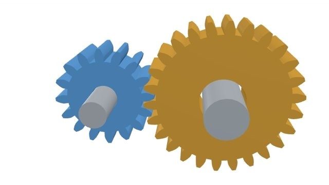
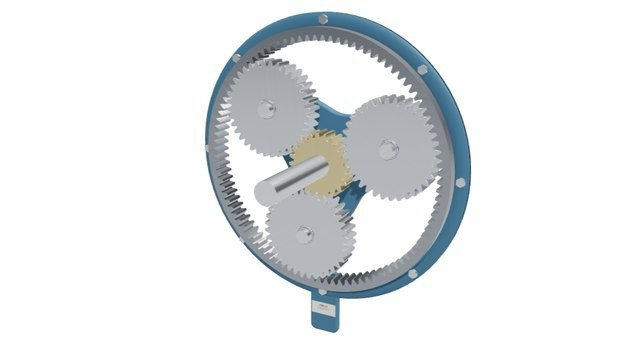

BME 2102 interactive notes
Mechanics of Machines I
BME 2102, seven chapters: introduction, simple mechanisms, velocity and acceleration, belt drives, toothed gearing, cams and balancing. Includes a tutorial class of all its worked calculations, and the slider-crank, quick return and spur gear labs.
Open course
BME 3102 interactive notes
Mechanics of Machines II
BME 3102, seven chapters: planar mechanisms, turning moment and the flywheel, vibrations, friction and clutches, gearing and gear trains, kinematic synthesis, governors and gyroscopes. Includes a tutorial class of all its worked calculations, and the flywheel, engine, clutch, vibration and Tacoma Narrows labs.
Open course